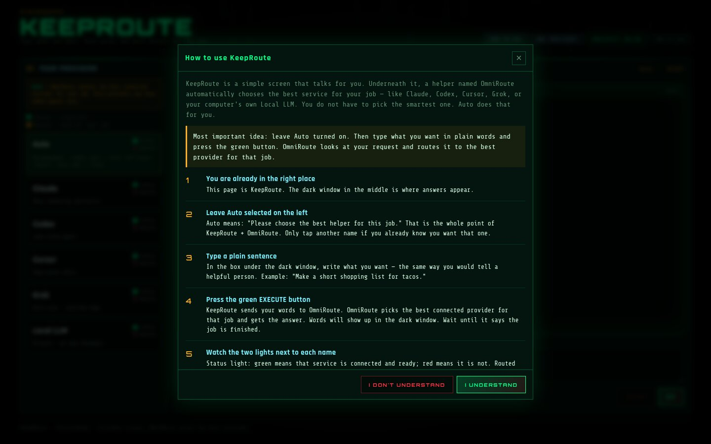
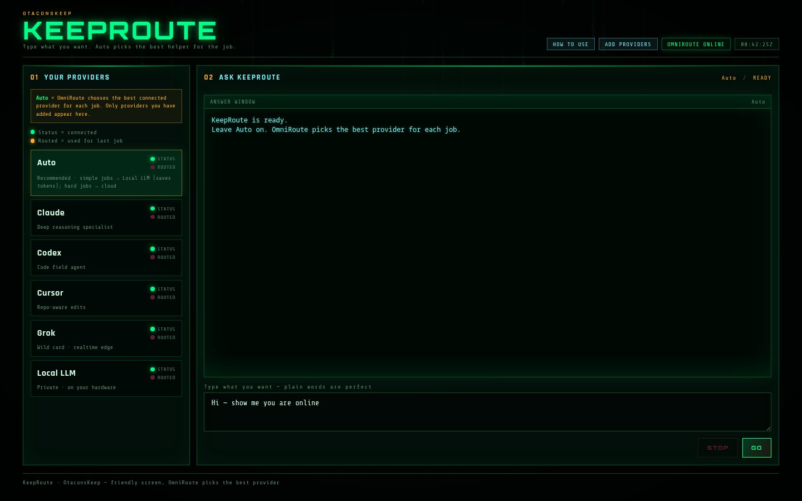
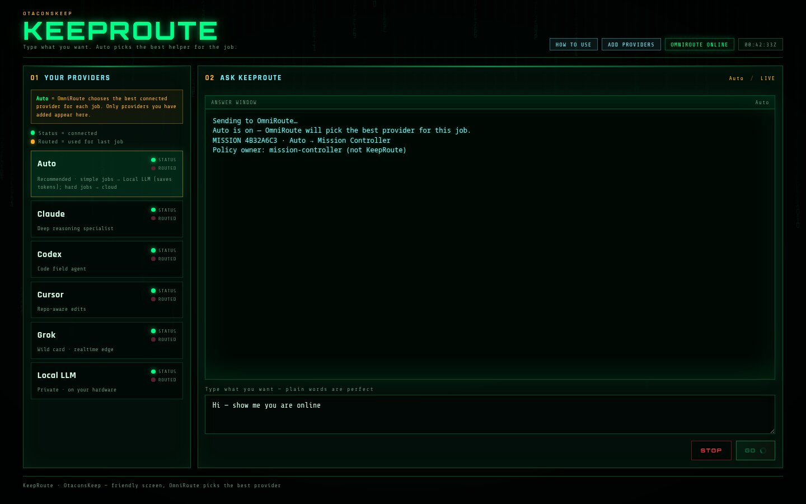

OmniRoute
Chooses where an AI request goes.
OtaconsKeep Stateful AI Orchestration
KEEPROUTE turns AI routing into persistent mission orchestration. It uses OmniRoute underneath for provider/model routing and adds mission state, recovery, checkpoints, local-first policy, and supported agent handoff.
We did not create stock OmniRoute. OmniRoute is the upstream routing data plane. KEEPROUTE is the OtaconsKeep orchestration layer built around it.
See the UI
Screenshots from the live KeepRoute field UI — the same surface operators use on OtaconsKeep. Neon terminal look, Auto routing, providers on the left, answers on the right.



Screenshots sanitized for public use (no API keys, no private LAN addresses). Click any image for full size.
Chooses where an AI request goes.
Remembers the whole job, watches it, and keeps it moving if the AI doing the work has to change.
Where KeepRoute fits
So you always know what is ours, what is upstream, and what the larger Keep is.
What does it actually do?
You tell the system what you want done. It chooses an appropriate AI or local model. If that provider hits a limit, crashes, or becomes unavailable, the job can continue through another compatible agent — without making you start over.
This does not mean every provider or every task is guaranteed to hand off perfectly. Handoff quality still depends on tool compatibility and what the mission has saved.
If needed again: Codex → failure → Cursor → same mission continues. Completed work, remaining tasks, errors, and files travel with the mission — not private “hidden reasoning” from the previous model.
Why this design exists
Quotas, rate limits, outages, context limits, different strengths, different tools. KeepRoute separates the mission from the provider. The job belongs to the orchestration layer — not to Claude, Codex, Cursor, Grok, or any single model.
That means the system can choose the right executor, preserve progress, and move the mission when conditions change.
What did KeepRoute improve?
Long-running work gets a persistent Mission ID and state instead of living only inside one model call.
Clients no longer secretly choose providers. One orchestration layer owns routing policy.
Rate limits, quota issues, timeouts, and supported runtime failures can trigger controlled recovery instead of forcing a restart.
Not merely retrying a prompt elsewhere — completed work, errors, checkpoints, files, and remaining tasks can be preserved.
A mission can outlive the individual AI currently performing it.
Simple requests can stay local instead of unnecessarily consuming paid-provider usage.
Persistent state allows supported missions to survive service restart and validated host reboot recovery.
Before / after
Conceptual product architecture only. No internal network topology is shown.
KeepRoute vs stock OmniRoute
Stock OmniRoute is an excellent provider/model routing gateway. KeepRoute adds a higher-level stateful orchestration/control plane. We do not claim stock OmniRoute is “bad.”
Stock column verified against public OmniRoute documentation (architecture + resilience guides on the upstream GitHub project). Where stock has no mission-orchestration equivalent, we say so plainly.
| Capability | Stock OmniRoute | KeepRoute 1.0 |
|---|---|---|
| Multiple providers / models | Yes | Uses OmniRoute |
| Provider / model routing | Yes | Uses OmniRoute |
| Provider fallback / combos | Yes | Uses OmniRoute + mission-aware recovery |
| Health / circuit handling | Yes | Uses OmniRoute resilience + KeepRoute supervision |
| Policy-based task classification | Not KeepRoute-style mission policy | Yes |
| Persistent Mission ID | No equivalent mission layer | Yes |
| Persistent mission state | No equivalent mission layer | Yes |
| Checkpoints | Not core stock routing | Yes |
| Completed / remaining work tracking | No equivalent | Yes |
| Unresolved-error preservation | No equivalent | Yes |
| Route history (mission-level) | Request/usage telemetry ≠ mission history | Yes |
| Service restart recovery | No mission-level equivalent | Yes (tested) |
| Full-host reboot recovery | No mission-level equivalent | Yes (verified 2/2 in KeepRoute testing) |
| Stateful model continuation | Fallback ≠ mission continuation package | Yes |
| Cross-agent runtime handoff | No | Yes, supported/tested paths |
| Claude Code → Codex continuation | No | Yes, supported/tested path |
| Multi-hop continuation | No mission multi-hop | Yes |
| Duplicate / destructive action protection | No mission ledger equivalent | Yes |
| Local-first trivial routing | Configurable routing | Policy-enforced local-first for trivial work |
| Operational mission metrics / release gate | Gateway monitoring | Mission soak metrics + release verification |
Sources: upstream OmniRoute README / Architecture / Resilience Guide (public GitHub). KeepRoute column = OtaconsKeep 1.0 release capabilities.
Why it helps this use case
The mission exists independently from a single model request.
Recoverable provider failures do not necessarily require starting again.
A coding mission can move between supported agent runtimes.
Simple work can remain local.
Important mission state can survive service interruption.
Routing decisions are controlled by one orchestration layer rather than scattered through clients.
You can inspect what route was selected and why.
Centralized routing ownership, durable checkpoints, failure taxonomy, adapters, local-first policy, restart recovery, and evidence-driven releases.
Benchmarks // verified release results
These are observed release-test results, not universal guarantees. Sample sizes are shown beside every rate.
Security / privacy
We do not claim “everything is encrypted.” Public static website assets are not part of an encryption-at-rest story. Below is an honest control map for KeepRoute deployments.
API keys and provider secrets must not be shipped to the browser or embedded in public pages.
Internal routing data-plane services are intended for private/local binding — not for casual public exposure.
This site publishes aggregate release results only. No raw mission payloads, logs, or credentials.
Static HTML/CSS/JS for this page contain no API keys, tokens, or private remotes.
Full-disk / field-level encryption of every mission record is not claimed as a verified KeepRoute 1.0 guarantee.
Operators should apply their own backup encryption. KeepRoute 1.0 does not advertise a verified universal backup-crypto product feature.
Use TLS wherever traffic crosses an exposed network. Local-only installs may use loopback without public TLS — that is a deployment choice, not a magic shield.
Administrative APIs and dashboards should be authenticated and not published as open internet endpoints.
If a control is marked Not verified, we will not market it as finished. Prefer honest gaps over false confidence.
Pros & cons
Limitations
Install
No one-click installer required. You install the same KeepRoute field UI we run on OtaconsKeep hardware — on your machine. Follow the steps in order.
• A computer you control (Linux is the path we document here; Windows users can use WSL2 Ubuntu)
• Python 3.10+
• Docker (to run OmniRoute)
• pip for Python packages
• Optional but recommended: a GPU for Local AI — if you have no GPU, use cloud providers only
Optional foundation: install OtaconsKeep Lite first if you also want the broader Keep agent ecosystem. KeepRoute does not require Lite to run.
This is the KeepRoute field UI — same product surface as our Keep desk, branded KeepRoute.
Unzip it somewhere permanent, for example:
mkdir -p ~/keeproute cd ~/keeproute unzip ~/Downloads/KeepRoute-UI.zip # You should see: desk/ docker-compose.omniroute.yml README.txt
OmniRoute is the upstream open-source data plane. KeepRoute uses it; we did not invent it.
cd ~/keeproute/KeepRoute-UI # Set your OWN first-login password (do not reuse examples from the internet) export OMNIROUTE_INITIAL_PASSWORD='pick-a-strong-password' docker compose -f docker-compose.omniroute.yml up -d docker ps | grep omniroute
OmniRoute listens on your machine at http://127.0.0.1:20127 (loopback). Open the OmniRoute dashboard in a browser if the image exposes one, sign in with the password you set, and connect providers there (Claude / OpenAI / Cursor / xAI / Ollama, etc.).
Upstream project: github.com/diegosouzapw/OmniRoute
cd ~/keeproute/KeepRoute-UI
python3 -m pip install --user flask
mkdir -p desk/state
echo '{}' > desk/state/credentials.json
chmod 600 desk/state/credentials.json
export OMNIROUTE_HOST=http://127.0.0.1:20127
export OMNIROUTE_DESK_PORT=20129
export OMNIROUTE_DESK_BIND=127.0.0.1
python3 desk/app.py
Leave that terminal open. In your browser open:
http://127.0.0.1:20129/
You should see the KEEPROUTE screen (providers on the left, ask box on the right).
Optional: copy keeproute-ui.service.example into your user systemd units so it starts on login.
In the KeepRoute UI click ADD PROVIDERS.
Never paste API keys into Discord, email, or this website. Keys stay on your computer inside KeepRoute / OmniRoute.
1. Leave Auto selected.
2. Type: Hi → press GO → expect a Local / inexpensive route when Local is healthy.
3. Type: Write a small Python calculator → expect a coding-capable provider when one is connected.
4. Status lights: green = connected; Routed = used on the last job.
The field UI works with OmniRoute alone. For persistent missions, checkpoints, and the full KeepRoute 1.0 control plane, also run the Mission Controller sidecar from the KeepRoute 1.0 release package when you have it, and set:
export MISSION_CONTROLLER_URL=http://127.0.0.1:20130
Auto policy is owned by Mission Controller when that service is present.
You can type normal requests. Prefer Auto unless you intentionally force a provider. To stop: Ctrl+C in the KeepRoute terminal, and docker compose -f docker-compose.omniroute.yml down if you want OmniRoute stopped too.
Page won’t open: confirm python3 desk/app.py is still running and you used 127.0.0.1:20129.
Providers missing: connect them in OmniRoute first, save the OmniRoute API key in KeepRoute, then refresh the page.
Docker errors: install Docker Engine, log out/in (or restart), retry docker compose … up -d.
Local AI silent: no GPU / no Ollama is fine — use cloud providers; Local is optional.
Release
FAQ
No. It uses stock OmniRoute as its underlying provider/model routing data plane and adds a stateful Mission Controller and orchestration layer (KeepRoute).
KeepRoute extends OmniRoute with an independent stateful orchestration/control layer. We do not present KeepRoute as “our OmniRoute fork.” Upstream OmniRoute remains its own project.
KeepRoute can checkpoint the mission and continue on another eligible provider/agent when the path is supported. That is different from simply retrying the same prompt blindly.
Yes, as a supported agent adapter path when configured. Not every Cursor capability is identical to every other agent.
The mission should stop cleanly rather than pretending it succeeded.
Simple work can stay local. Heavy coding/agent work may still need cloud providers depending on your hardware and models.
No.
No. Release tests showed strong results in the measured samples; they are not a universal guarantee.
No. Keys must stay server-side and protected. Never paste them into a public webpage or chat.
Upstream
OmniRoute is an open-source local AI gateway: one OpenAI-compatible endpoint, many providers, combos, and resilience features. Learn more from the upstream project: